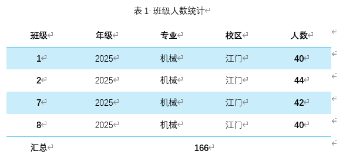

论文
Paper
- 创建文档
- 以学号和姓名命名，如20260320王大力
- 根据实际情况，修改文档"文件" → "信息"，后续设计需要使用
- 文档设计
- 指定字体：中文宋体；西文 Times New Roman
- 为文档添加文字水印"谢绝转发"
- 为文档设置页面颜色
- 为文档设置页面边框
- 封面设计
- 在文档开始处，插入"封面" → "积分"
- 部分数据从文档信息中抓取
- 部分数据需要手动编辑
- 首页设计
- 参考下图，利用表格布局，完成封面设计并录入个人 真实信息
- 段落
- 创建诺干正文段落
- 两端对齐
- 首行缩进 2 字符
- 正文宋体、西文新罗马 Times New Roman、常规 5 号
- 段前段后 6 磅、固定行距24磅
- 文档结束处插入作者和日期，右对齐
- 首字下沉
- 设置正文某一段落为首字下沉 4 行，距离正文 1 厘米
- 分栏
- 设置正文的5个段落分 3 栏显示
- 第1栏：宽度 10，间距 2 字符
- 第2栏：宽度 14，间距 2 字符
- 使用分隔线
- 表格
- 复制以下文本到文档中
- 班级#年级#专业#校区#人数
1#2025#机械#江门#40
2#2025#机械#江门#44
7#2025#机械#江门#42
8#2025#机械#江门#40 - 转换为表格
- 各行高度 1 厘米；宽度自动（页宽）
- 求总人数
- 为表格添加1行作为汇总行
- 使用公式计算人数总和
- 最后1行空白单元格合并到人数，居中显示
- 应用表格样式 清单表 1 浅色 - 着色4，
- 增加显示汇总行和最后1列样式
- 所有内容在单元格内水平居中、垂直居中
- 在表格上方插入一行作为表序
- 图文混排
- 图片内容任意，大小 2*2 厘米
- 任意选择2个段落
插入第1个图片，段落左上角
插入第2个图片；段落右上角
- 页眉页脚
- 为文档插入页眉
距离文档顶部 1.5 厘米
三栏内容，左中右分别插入文档的作者、标题和单位
底部指定实线边框；颜色、粗细自定
- 为文档插入页脚
距离文档底部 1.5 厘米
三栏内容，左中右分别是当前日期、页码和主管
顶部指定实线边框；颜色、粗细自定
- 页码
页脚显示
阿拉伯数字
页码采用总页码和当前页码的形式如，2/4
格式为 第 x 页/总 y 页

